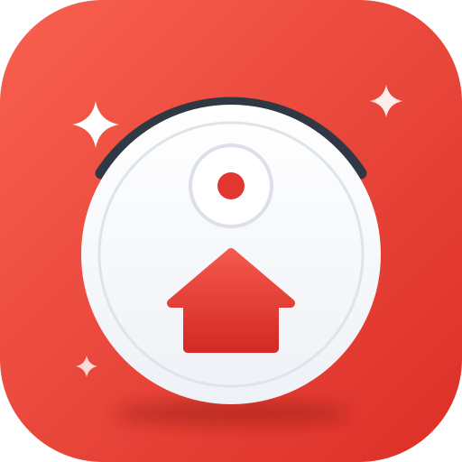
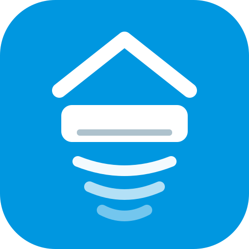

Its own address
Every Homebridge gets a fixed address or one from your router (DHCP), with a fixed MAC address. On the network it is its own device, so HomeKit finds it as usual. While you type an address, the app checks that nothing else uses it.
A QTS app that runs each Homebridge in its own Docker container, with its own address on your home network, and looks after all of them from one page on the QTS desktop.
For x86_64 NAS models with QTS 5 and Container Station. The app’s interface is in Traditional Chinese and Japanese.
Each Homebridge is a house. Its drawing tells you how it is doing, without reading a word.
Every Homebridge gets a fixed address or one from your router (DHCP), with a fixed MAC address. On the network it is its own device, so HomeKit finds it as usual. While you type an address, the app checks that nothing else uses it.
The app compares your image with Docker Hub when you open it. An upgrade pulls the new image, recreates the container and watches it. If it does not stay up, the previous container is switched back on, and it stays as a backup you can return to later.
Homebridge containers you made in Container Station show up on the street. Taking one over keeps its name, address, MAC and folders, so the Home app does not need to pair again.
The containers live on Container Station’s system-docker, which Container Station’s own list does not show, so nobody deletes them there by mistake.
The work folder holds the configuration, plugins and pairing. Mount more shared folders with a folder browser. The app never empties, deletes or changes the ownership of a folder.
One click opens each Homebridge’s own web page, with its port and HTTPS setting. Bind a domain name and the app tells you where it resolves. It never edits your DNS.
Each Homebridge shows its container log and resource use. Upgrades and changes run in the background and show every step as it happens.
Containers run on Docker’s restart policy, not as part of the app. Stopping, upgrading or removing the app does not stop a single Homebridge.
Homebridge_<version>_x86_64.qpkg from the latest release.Or install from an SSH session as an administrator:
sh Homebridge_<version>_x86_64.qpkgInstalling a newer version keeps your settings and leaves running containers alone.
One Rust program, hbmgr, runs behind the QTS admin web server. It checks your QTS session and speaks to Docker directly over its socket: no Docker CLI, no shell, no PHP. The page is plain HTML, CSS and JavaScript.
Applying settings, upgrading and taking over all use the same step, a recreate with rollback:
<name>.hbmgr-prev.system-docker.qnet network driver.hbmgr.* labels, so a reinstall finds them again.The details are in the README, the API contract and the interface design.
Free Homebridge plugins that bring more of your home into Apple Home. Each one can run in a Homebridge of its own on the street.

Roborock Vacuum homebridge-roborock-vacuum Roborock robot vacuums in Apple Home over HomeKit or Matter, still working on your home network when the Roborock cloud is down.
Daikin Local Platform homebridge-daikin-local-platform Daikin air conditioners in Apple Home over HomeKit or Matter, controlled directly on your home network.